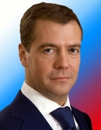

Дмитрий Анатольевич Медведев

Дмитрий
Анатольевич Медведев
— российский государственный и политический деятель, третий президент Российской
Федерации (2008 — 2012), председатель правительства Российской Федерации (с 2012
года), председатель партии «Единая Россия» (с 2012 года).
Происхождение,
детство, образование Дмитрия Медведева
Дмитрий
Анатольевич Медведев родился 14 сентября 1965 года в Ленинграде. Дмитрий
Медведев был единственным ребенком в семье, которая жила в районе Купчино,
«спальном районе» Ленинграда, на улице Белы Куна.
Отец
— Анатолий Афанасьевич Медведев (1926−2004) — был профессором Ленинградского
технологического института имени Ленсовета. Он — потомок крестьян Курской
губернии.
Мать
Дмитрия Медведева — Юлия Вениаминовна (девичья фамилия — Шапошникова) — родилась
21 ноября 1939 года, дочь Вениамина Сергеевича Шапошникова и Меланьи Васильевны
Ковалёвой — филолог, преподавала в Педагогическом институте имени А. И. Герцена,
позже работала экскурсоводом в Павловске. По материнской линии корни Дмитрия
Анатольевича Медведева из Белгородской области. О них не очень много информации,
в биографии Дмитрия Медведева в Википедии говорится только, что Сергей Иванович
и Екатерина Никитична Шапошниковы, Василий Александрович и Анфия Филипповна
Ковалёвы — происходят из Алексеевки Белгородской области. Впрочем, «Собеседник»
писал, что дед Дмитрия Медведева Вениамин Шапошников работал в санитарной службе
на железной дороге, а бабушка, Меланья Васильевна, была домохозяйкой и шила на
дому. У матери Дмитрия Анатольевича есть сестра-близнец Елена (настоящее имя
Серафима) Шапошникова. Тетя Медведева проживает в Воронеже и в США, где ей купил
квартиру в Майами сын Артем — двоюродный брат
премьер-министра.
Дед
по отцовской линии — Афанасий Фёдорович Медведев (1904−1994) был партийным
работником с 1933 года. Участник Великой Отечественной войны, капитан. Бабушка —
Надежда Васильевна Медведева была домохозяйкой, воспитывала детей: Светлану и
Анатолия.
Дмитрий
Медведев посещал среднюю школу № 305, где учился хорошо, был старательным
учеником, даже предпочитая занятиям игры на улице. После окончания школы Дмитрий
Анатольевич поступил в Ленинградский государственный университет имени А. А.
Жданова на юридический факультет. Завершив в 1987 году основной курс обучения,
Дмитрий Медведев стал аспирантом. Учебу в аспирантуре окончил в 1990
году.
Еще
в школе Дмитрий Медведев занимался байдарочным спортом, ходил на греблю в школу
трудовых резервов. В студенческие годы успешно занимался тяжелой атлетикой.
Невысокий рост (рост Дмитрия Медведева — 163 см), как известно, может быть
удобен в этом виде спорта. Дмитрий Анатольевич даже выигрывал университетские
соревнования по штанге.
В
университете Медведев вступил в партию, оставался членом КПСС до августа 1991
года. И еще интересный момент из жизни Дмитрия Анатольевича: в беседе со
студентами Тихоокеанского университета будущий третий президент России поделился
своими откровениями. Он рассказал, что, учась в университете, получал повышенную
стипендию 50 руб. и при этом подрабатывал дворником, получая зарплату 120 руб. в
месяц.
С
1988 года (с 1988 по 1990 в качестве аспирантской практики) Дмитрий Анатольевич
Медведев начал трудовую биографию — преподавал гражданское и римское право на
юридическом факультете ЛГУ, затем СПбГУ. Защитил кандидатскую диссертацию на
тему: «Проблемы реализации гражданской правосубъектности государственного
предприятия». Прекратил преподавание Дмитрий Анатольевич только в 1999 году в
связи с переездом в Москву.
Карьера
Дмитрия Медведева
Учась
в аспирантуре и находясь одновременно на преподавательской работе, Дмитрий
Анатольевич параллельно в 1990—1995 годах был советником председателя
Ленинградского городского совета народных депутатов Анатолия Собчака, с чего
началась его деятельность как политика. Затем Дмитрий Медведев был назначен
экспертом Комитета по внешним связям мэрии Санкт-Петербурга, председателем
которого являлся Владимир Путин.
В
90-е годы у Дмитрия Медведева оставалось время и на бизнес. В 1993 году он стал
соучредителем ЗАО «Финцелл» и обладателем 50% пакета акций. В 1993—1998 годах —
соучредитель и руководитель правовой службы «Илим Палп Интерпрайз», обладатель
20% пакета акций. В 1994 году был соучредителем ЗАО «Консультационная фирма
«Балфлот». По некоторым данным, в первой половине 90-х в биографии Медведева
была и работа юристом в петербургской акционерной страховой компании
«Русь».
В
1996 году, после поражения Собчака на выборах, Дмитрий Медведев прекратил работу
в Смольном. Московский период у Дмитрия Медведева начался с ноября 1999 года,
когда его назначили заместителем руководителя аппарата Правительства Российской
Федерации (Дмитрия Козака). Этому поспособствовал ставший председателем
Правительства Российской Федерации Владимир Путин.
После
ухода Бориса Ельцина, Медведев работал заместителем руководителя администрации
президента Российской Федерации. Дмитрий Анатольевич возглавлял предвыборный
штаб Владимира Путина.
В
официальной биографии Дмитрия Медведева также имеется запись о его работе в
должности председателя совета директоров ОАО «Газпром» (2000 — 2001),
заместителя председателя в 2001 году и снова председателя с июня 2002
года.
С
октября 2003 года Медведев Дмитрий Анатольевич стал руководителем администрации
президента России. Также в 2003 году 12 ноября он был назначен членом Совета
безопасности Российской Федерации. В апреле 2004 года Дмитрий Анатольевич
получил статус постоянного члена Совета Безопасности
России.
Дмитрий
Медведев (на снимке слева) Указом президента РФ назначен руководителем
администрации президента Президент России Владимир Путин и руководитель
администрации президента Дмитрий Медведев (слева направо), 2003 год.
С
14 ноября 2005 года по 7 мая 2008 года Дмитрий Медведев исполнял обязанности
первого заместителя председателя Правительства России. 2006−2008 годы он также
был председателем президиума Совета по реализации приоритетных национальных
проектов. В октябре 2007 года Медведев объявил о выполнении проекта по
подключению к Интернету всех российских школ (59 тыс.).
10
декабря 2007 года главной новостью стало то, что Владимир Путин поддержал
кандидатуру Дмитрия Медведева на пост президента Российской Федерации. «Что
касается кандидатуры Дмитрия Анатольевича Медведева, я знаком более 17 лет очень
близко с ним, и целиком и полностью поддерживаю эту кандидатуру», — сказал
Владимир Владимирович. На следующий день по ТВ было показано обращение Медведева
к Путину «с просьбой дать принципиальное согласие возглавить правительство
России после избрания нового президента нашей страны». 17 декабря 2007 года
Дмитрий Медведев был выдвинут кандидатом на должность президента России на
съезде партии «Единая Россия». Против был лишь один делегат, а за — 478
человек.
Дмитрий
Медведев пошел на выборы с лозунгом «Вместе победим». Избирательный штаб
Медведева возглавил руководитель Администрации президента и будущий мэр Москвы
Сергей Собянин. В своих предвыборных обещаниях Дмитрий Анатольевич говорил о
повышении уровня и качества жизни населения, о продолжении работы над
приоритетными национальными проектами. «…главное для нашей страны — это
продолжение спокойного и стабильного развития. Необходимы просто десятилетия
стабильного развития. То, чего наша страна была лишена в двадцатом столетии —
десятилетия нормальной жизни и целенаправленной работы», — говорил будущий
третий президент в выступлении на II Общероссийском гражданском форуме 22 января
2008 года.
На
выборах, прошедших 2 марта 2008 года Дмитрий Анатольевич Медведев получил
52.530.712 голосов (70,28%). В своей инаугурационной речи Дмитрий Анатольевич
заявил, что приоритетной задачей на новой должности считает «дальнейшее развитие
гражданских и экономических свобод, создание новых гражданских возможностей».
Подтвердил этот курс подписанием своих первых указов, которые напрямую касаются
социальной сферы. В частности, одним их первых документов стал федеральный
закон, предусматривающий обеспечение жильём за счёт средств федерального бюджета
всех нуждающихся в улучшении жилищных условий ветеранов Великой Отечественной
войны до мая 2010 года.
Президенство
В
период президентства Дмитрия Медведева стабилизировался рост населения,
увеличился процент многодетных семей. Он продолжил политику Владимира Путина в
области сельского хозяйства. Деятельность президента Медведева сложно
рассматривать в отрыве от работы премьер-министра тех лет Путина, нередко в СМИ
публиковались совместные фото представителей «тандема». Вместе Медведев и Путин
совершали рабочие поездки по стране, в самые ее дальние уголки, как делают это и
до сих пор. Так в 2017 году президент России Владимир Путин и премьер-министр
Дмитрий Медведев 29 марта посетили остров Земля Александры архипелага Земля
Франца-Иосифа, где пообщались с экологами и ознакомились с результатами уборки
острова от мусора.
При
президенте Медведеве реальные доходы населения выросли почти на 20%, двукратно
увеличился средний размер пенсий; более миллиона семей улучшили жилищные условия
благодаря программе материнского капитала. Многое было сделано в сфере малого
бизнеса — Медведев способствовал упрощению процедуры открытия собственного дела,
а также снял некоторые ограничения для предпринимателей, сам Дмитрий Анатольевич
призывал «не кошмарить бизнес».
Компьютерные
технологии, инновации, гаджеты
Было
положено начало созданию мощного центра исследований, который должен был стать
аналогом американской Кремниевой долины. В сентябре 2010 года Медведев подписал
Федеральный закон № 244 «Об инновационном центре Сколково», этот центр Дмитрий
Анатольевич неоднократно называл знаковым и важнейшим звеном модернизации
России.
Вообще
Дмитрий Медведев уделял немало времени инновациям, что было предметом шуток в
его адрес, в связи с тягой президента к современным гаджетам, развитию
Интернета, присутствию в социальных сетях. Фото Дмитрия Медведева со смартфонами
и прочими приборами активно печатались в новостях.
На
сегодняшний день, в 2017 году, Дмитрий Медведев остается любителем соцсетей,
зарегистрирован в «Твиттере», «вКонтакте», публикует фото в соцсети Instagram.
Например, Медведев поздравлял с помощью Instagram с Днем России, разместив фото
с четырьмя российскими флагами на фоне хвойного леса.
Ник
Дмитрия Анатольевича в Instagram — damedvedev. К лету 2017 года Медведев
разместил там более 500 фото, которые собирают десятки тысяч «лайков». В
частности, фото, на котором Медведев и Путин ужинают ухой на озере Ильмень,
получило 170 тысяч «лайков». Многие посты Медведева в соцсетях сразу же
становятся новостями и попадают во многие СМИ.
Военный
конфликт с Грузией
В
биографии президента Медведева произошел непростой эпизод уже в первый год его
президентства. В ночь с 7 на 8 августа 2008 года пришли шокирующие новости с
Кавказа — грузинские войска начали интенсивный артиллерийский обстрел столицы
Южной Осетии Цхинвала и прилегающих районов. Трагедия продолжалась, когда через
несколько часов последовал штурм города силами грузинской бронетехники и пехоты.
В результате атаки более десяти военнослужащих российских миротворческих сил
было убито, несколько десятков — ранено.
В
тот же день президент Южной Осетии Эдуард Кокойты сообщил о многочисленных
жертвах среди мирных жителей Южной Осетии и обвинил президента Грузии Михаила
Саакашвили в геноциде осетинского народа.
Позднее
Медведев отмечал: «В конечном счёте, до какой-то поры у нас ещё оставались
надежды на то, что это всё-таки некая провокация, которая не будет доведена до
конца. Но в тот момент, когда реально заработали ракетные орудия, начали
стрелять танки, и мне было доложено о гибели наших граждан, в том числе
миротворцев, я ни минуты не колебался и отдал приказ на поражение и ответные
действия».
В
этот период президент Медведев провел переговоры с французским президентом
Николя Саркози, завершившиеся принятием плана урегулирования вооруженного
конфликта в Грузии. Дмитрий Анатольевич охарактеризовал действия грузинской
армии в зоне грузино-южноосетинского конфликта как геноцид и этнические чистки.
Он также сравнил руководство Грузии с «отморозками, которые почувствовали запах
крови».
Президент
Франции Николя Саркози и президент России Дмитрий Медведев (слева направо) на
встрече в Кремле.(Москва, 12 августа 2008 г.)
СМИ
демонстрировали фото о встрече в официальной обстановке в Кремле 14 августа 2008
года (по окончании активных боевых действий в Грузии) Медведева с президентом
Республики Абхазия Сергеем Багапшем и президентом Республики Южная Осетия
Эдуардом Кокойты. В ходе встречи Кокойты и Багапш подписали шесть принципов
урегулирования грузино-югоосетинского и грузино-абхазского конфликтов, ранее
разработанных Медведевым и Саркози; президентам непризнанных республик было
сообщено, что Россия поддержит любое решение о статусе Южной Осетии и Абхазии,
которое примут народы этих республик.
Внешняя
политика Дмитрия Медведева
В
2009 года Дмитрий Медведев проводил переговоры с Бараком Обамой во время его
официального рабочего визита в Москву. Были подписаны двусторонние соглашения, в
том числе о транзите американских военных грузов в Афганистан через территорию
России, и намечены ориентиры сокращения стратегических наступательных
вооружений. 8 апреля 2010 года президент России Д. Медведев и президент США Б.
Обама в Праге подписали Договор о сокращении стратегических наступательных
вооружений сроком на 10 лет.
28
ноября 2009 года Дмитрий Медведев, президент Белоруссии Александр Лукашенко и
президент Казахстана Нурсултан Назарбаев в Минске подписали договор о создании
на территории России, Белоруссии и Казахстана с 1 января 2010 года единого
таможенного пространства.
В
апреле 2010 года Дмитрий Анатольевич Медведев провел переговоры с президентом
Украины Виктором Януковичем, по итогам которых были подписаны Харьковские
соглашения о продолжении базирования российского Черноморского флота в Крыму
после 2017 года.
На
посту премьер-министра. Критика Д. Медведева
8
мая 2012 года Дмитрий Медведев был назначен председателем Правительства
Российской Федерации. На посту премьер-министра ему пришлось столкнуться с более
тяжелым экономическим кризисом, чем во время президентства, и в адрес Дмитрия
Анатольевича последние годы идет немало критики, в частности, со стороны КПРФ.
Летом 2013 года десятки тысяч людей, выйдя на улицы в рамках начатой
коммунистами общероссийской акции за отставку кабинета министров, открыто
выразили свое несогласие с курсом, проводимым высшим исполнительным органом
власти. Осенью 2016 года лидер КПРФ Геннадий Зюганов заметил, что с командой
Медведева ехать дальше некуда.
В
2016 году Дмитрий Медведев запомнился несколькими фразами, которые в итоге
получили большую известность и стали интернет-мемами. В десятку мемов года
Медведев попал со знаменитым обращением к жителям Крыма «Денег нет, но вы
держитесь». А предложение премьера переименовать «американо» в «русиано» заняло
7-е место в рейтинге запросов Google.
Также
запомнилось, как летом 2016 года Дмитрий Анатольевич на образовательном форуме
«Территория смыслов» посоветовал преподавателю из Дагестана, пожаловавшемуся на
низкие зарплаты учителей в республике, заняться бизнесом. «Самое главное — это
личный выбор. Меня часто об этом спрашивают. И по учителям, и по преподавателям
— это призвание. А если хочется деньги зарабатывать — есть масса прекрасных
мест, где можно сделать это быстрее и лучше. Тот же самый бизнес», — сказал
премьер-министр.
В
2017 году Фонд борьбы с коррупцией Алексея Навального опубликовал расследование,
посвященное Дмитрию Медведеву. Главная тема — объекты недвижимости (они сняты
квадрокоптерами с высоты птичьего полета), принадлежащие фондам и компаниям,
которые, по мнению авторов публикации, связаны с премьер-министром. Новости о
фильме «Он вам не Димон» стали заметным явлением весны 2017
года.
Сам
премьер всю изложенную информацию назвал мутью и чушью.
В
свою очередь группа депутатов от КПРФ внесла проект протокольного поручения в
связи с появившимися в интернете обвинениями. В документе говорится, что
опубликованная Навальным информация вызвала широкий общественный резонанс, а
отсутствие какой-либо реакции на эти «разоблачения» наносит ощутимый ущерб
авторитету государственной власти. В связи с этим коммунисты поручают комитету
Госдумы по безопасности и противодействию коррупции провести проверку публикации
«Он вам не Димон». Госдума на заседании 5 апреля большинством голосов отклонила
внесенный депутатами фракции КПРФ проект протокольного поручения провести
парламентское расследование материалов о недвижимости премьера Дмитрия
Медведева, изложенных в расследовании.
«Я
не буду специальным образом комментировать абсолютно лживые продукты
политических проходимцев и считал бы, что уважаемая мною фракция
Коммунистической партии РФ должна от этого воздерживаться», — сказал Медведев,
отвечая на вопрос депутата от КПРФ в Госдуме. Обвинения ФБК Медведев Дмитрий
Анатольевич назвал «абсолютно лживыми продуктами политических
проходимцев».
В
апреле 2017 года глава правительства Дмитрий Медведев отчитался о своих доходах.
Согласно декларации доходы Медведева в 2016 году незначительно снизились и
составили более 8,5 миллиона рублей.
По
апрельским данным опроса «Левада-Центра» (некоммерческой организации,
выполняющей функции иностранного агента) рейтинг одобрения премьер-министра РФ
Дмитрия Медведева за месяц упал сразу на 10%. Пресс-секретарь премьер-министра
Наталья Тимакова считает, что опрос, согласно которому 45% россиян поддерживают
отставку Медведева, не стоит рассматривать всерьез ввиду его политической
ангажированности.
После
выборов президента 2018 года, на которых победил Владимир Путин, правительство
России во главе с Дмитрием Медведевым 7 мая ушло в отставку. Это произошло после
инаугурации президента. Затем президент Путин на пленарном заседании Госдумы
попросил депутатов поддержать его предложение о назначении на должность
председателя правительства РФ Дмитрия Медведева.
Говоря
о том, почему снова выбрал Медведева, глава государства отметил, что, несмотря
на все эти сложности, правительству под председательством Дмитрия Медведева
удалось сохранить возможности для развития страны. Путин отметил, что последние
год-полтора Медведев и некоторые члены правительства работали над программой,
которая была изложена в новом «майском указе».
В
свою очередь лидер КПРФ Геннадий Зюганов высказал мнение, что состав
правительства, предложенный кандидатом Медведевым, не сможет реализовать
стратегию президента РФ.
8
мая Госдума одобрила назначение Дмитрия Медведева на пост премьер-министра.
Согласно результатам голосования, кандидатуру Медведева поддержали 374 депутата
при необходимых 226 голосах. Против Медведева высказались 56 парламентариев,
трое не приняли участие в голосовании, сообщалось в
новостях.
Личная
жизнь и увлечения Дмитрия Медведева
Жена
премьера, Светлана Владимировна Медведева (фамилия до замужества — Линник)
родилась 15 марта 1965 года в Кронштадте, в семье военного моряка Владимира
Алексеевича Линника и экономиста Ларисы Ивановны Линник. Светлана Линник после
переезда в Ленинград училась в одной школе с Дмитрием Медведевым. Светлана
Медведева окончила ЛФЭИ, работает в Москве и занимается организацией
общественных мероприятий в Санкт-Петербурге. Жена Дмитрия Медведева возглавляет
попечительский совет «Духовно-нравственная культура подрастающего поколения
России» и является Президентом Фонда социально-культурных
инициатив.
Медведевы
имеют сына Илью (1995 г. р.), который в 2016 году завершил обучение в Московском
государственном институте международных отношений. Издание «МК» опубликовало
фото сына премьера и интервью с ним. В нем Илья Медведев говорит, что тема его
диплома «Акционерные общества в России и Англии, правовое регулирование». Сын
Медведева также рассказывает о любви к театру, футболу и фехтованию. Но Илья
Медведев признал, что уже не мечтает о карьере в кино, после того, как снялся в
«Ералаше» и увидел это со стороны.
Дмитрий
Медведев любит футбол и с детства является болельщиком «Зенита». Есть много фото
Медведева в шарфе «Зенита». Любимая рок-группа — Deep Purple. Также Дмитрий
Анатольевич слушает Linkin Park вместе с сыном Ильей. В число любимых групп
Медведева входят «Земляне», со многими рок-музыкантами, российскими и
зарубежными, премьер встречался и делал совместные фото.
Дмитрий
Анатольевич увлекается фотографией. Начал фотографировать ещё в детстве на
камеру Смена-8М. Уже будучи президентом, Медведев участвовал в выставке фото под
открытым небом «Мир глазами россиян», проходившей в марте 2010 года на Тверском
бульваре в Москве. Сегодня в арсенале Медведева — фотокамеры фирм Leica, Nikon и
Canon.
«Конечно, мне нравится снимать людей. Но
снимать людей для меня совсем непросто. Ведь из-за моей работы это будет
выглядеть довольно странно, если я в какой-то момент выбегу с камерой и начну
кого-то фотографировать. Боюсь, люди меня просто не поймут», — говорил Медведев
о своем увлечении фото.
Награды
стал
кавалером высшей награды Сербской православной церкви — ордена Святого Саввы 1-й
степени.
Орден
«За заслуги перед Отечеством» I степени (14 сентября 2015 года) — за выдающиеся
заслуги перед государством, большой вклад в социально-экономическое развитие
Российской Федерации
Медаль
«В память 1000-летия Казани»
Благодарность
Президента Российской Федерации (8 июля 2003 года) — за активное участие в
подготовке Послания Президента Российской Федерации Федеральному Собранию на
2003 год
Лауреат
премии Правительства Российской Федерации в области образования за 2001 год (30
августа 2002 года) — за создание учебника «Гражданское право» для учебных
заведений высшего профессионального
образования